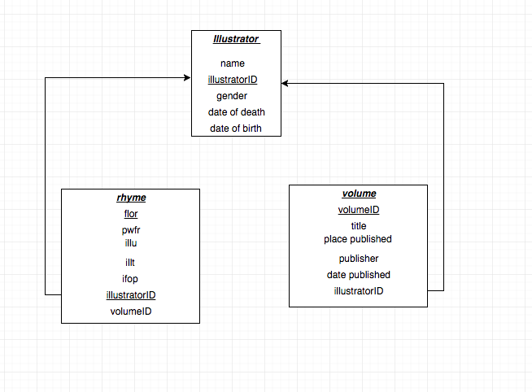
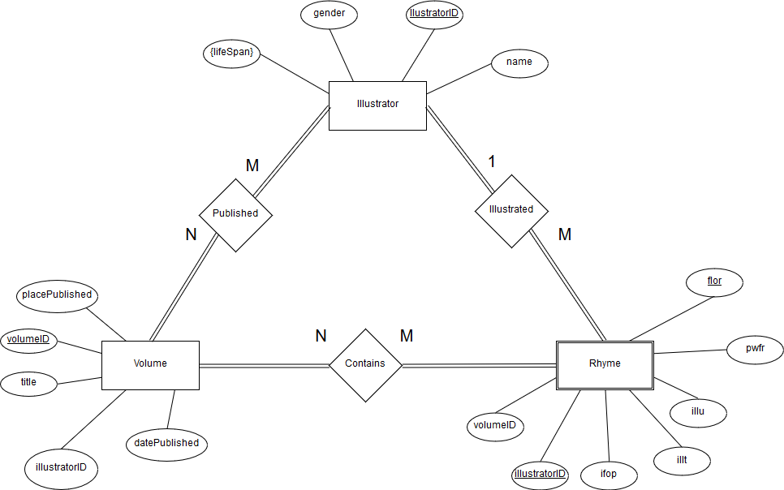
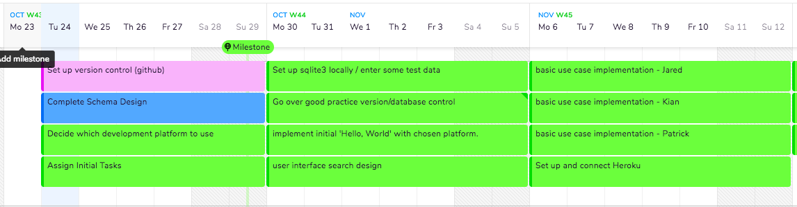
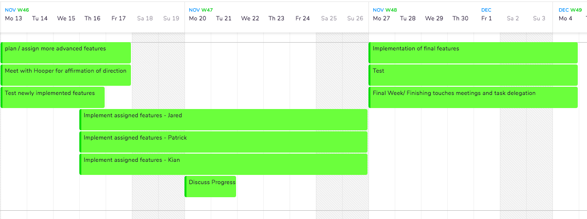

Project Proposal
Patrick, Jared & Kian
Introduction:
Kent Hooper is a Professor of German and the Director of the Humanities Teaching Collection at the University of Puget Sound. He is currently conducting research on various collections of German Nursery rhymes, cataloguing the different rhymes by various information about the rhyme, including but not limited to: the illustrator, type of illustration, date published, etc. At the moment all of this data is being kept in one large excel file and is not easily manipulated. This poses problems for Professor Hooper as he has no way to attack his painstakingly created data set in such a way that he can get information about the rhymes contained within. This is a problem that can be addressed by storing Professor Hooper’s research in a database that can be queried and organized in a manner suitable to Professor Hooper. In an effort to both make Professor Hooper’s research more accessible to him, as well as to allow him to open up his research to the world as a standing collection of all the rhymes he has documented we will be emulating the website Professor Hooper chose (http://ebba.english.ucsb.edu/), as well as attempting to add a portion that allows Professor Hooper to communicate with the database without having to know how to use SQL.
Use Cases:
User with little to no prior experience with SQL must be able to visit the website and generate reasonably complex SQL queries
Users must have access to a search engine that compiles and returns a list of information about the desired search topic
Professor Hooper/Designated admin should be able to log in with a username and password that is stored and encrypted, with options to vary length of time browser remembers said admin
Admin has the ability to add, delete, and update information in the database
Users should have ability to contact an admin
Users should be able to see an active accurate count of total number of rhymes, illustrators, and volumes stored at any given time
User should have access to a general catalogue of all given rhymes/ information in the database
User should be able to donate any given amount of money through some venue to the furthering of Professor Hooper’s research
If Professor Hooper sees fit, the user should have a small view of an active social media account that gives updates on the progress being made in his research
Schema Diagram:

ER Diagram:

Project Timeline:

